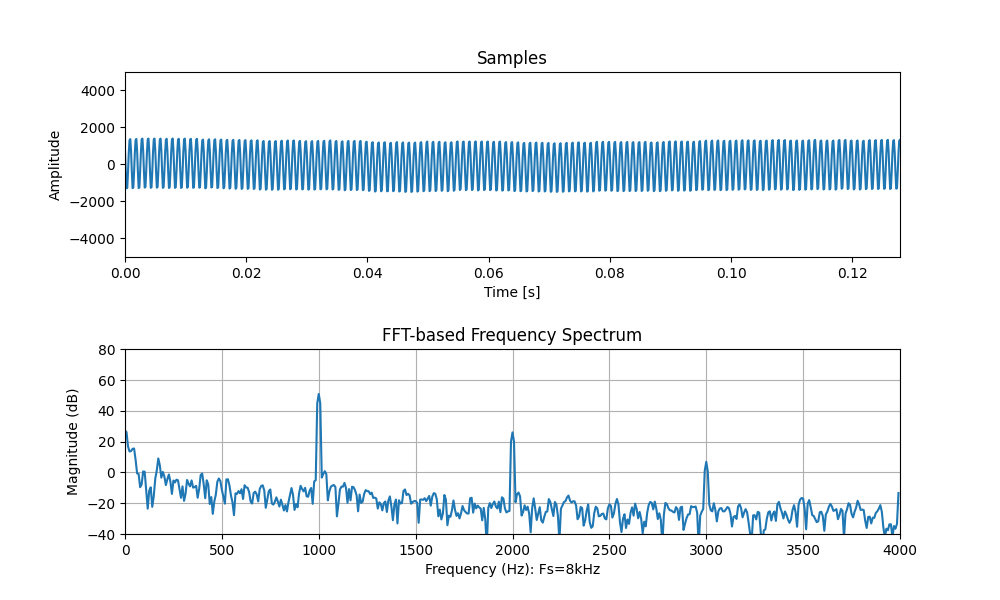

การอ่านค่าสัญญาณเสียงด้วย Python และการแสดงรูปสเปกตรัมเชิงความถี่#
บทความนี้กล่าวถึง การเขียนโค้ด Python เพื่ออ่านค่าสัญญาณเสียงจากไมโครโฟน และวิเคราะห์ข้อมูลด้วย FFT (Fast-Fourier Transform) สำหรับการแสดงผลในรูปของสเปกตรัมเชิงความถี่
Keywords: Python, PyAudio, NumPy / Matplotlib
▷ FFT (Fast-Fourier Transform)#
FFT เป็นอัลกอริทึมที่มีประสิทธิสูงสำหรับการคำนวณทางคณิตศาสตร์ตามรูปแบบที่เรียกว่า Discrete Fourier Transform (DFT) ซึ่งเป็นหนึ่งในวิธีการวิเคราะห์สัญญาณของฟูเรียร์ (Fourier Analysis)
อินพุตเป็นชุดข้อมูลจำนวนจำกัดที่ได้จาก "การชักตัวอย่าง" หรือ "การสุ่มตัวอย่าง" (Sampling) ของสัญญาณที่มีการเปลี่ยนแปลงค่าในเชิงเวลา และได้เอาต์พุตเป็นชุดของค่าสัมประสิทธิ์ที่เป็นเลขเชิงซ้อน (DFT Coefficients) ที่มีจำนวนเท่ากันกับข้อมูลอินพุต และนำไปวิเคราะห์คุณสมบัติของสัญญาณในเชิงความถี่ เช่น การแสดงผลในรูปแบบที่เรียกว่า "สเปกตรัมเชิงความถี่" (Frequency Spectrum) ซึ่งแสดงองค์ประกอบของสัญญาณในโดเมนความถี่
FFT ถูกจัดอยู่ในกลุ่มที่เรียกว่า "การประมวลผลสัญญาณดิจิทัล" (DSP: Digital Signal Processing) และใช้สำหรับการวิเคราะห์ชุดข้อมูลหรือสัญญาณดิจิทัลในเชิงความถี่
ถ้าจะประมวลผลข้อมูลด้วยการเขียนโปรแกรมในภาษา Python ก็สามารถทำได้ง่าย เนื่องจากมีไลบรารี หรือ แพ็กเกจ (Python Packages) เช่น NumPy ไว้ให้ใช้งาน
ลองมาดูตัวอย่างโค้ด Python ที่มีการใช้งาน NumPy และ Matplotlib เพื่อการวิเคราะห์ข้อมูลสังเคราะห์ที่ได้จากการชักตัวอย่าง ด้วยอัตราคงที่ จากสัญญาณรูปคลื่นไซน์ (Sinusoidal Wave) ที่มีความถี่เท่ากับ 500Hz และมีสัญญาณรบกวน (Noise) รวมอยู่ด้วย
import numpy as np
import matplotlib.pyplot as plt
N = 1024 # Number of samples
Fs = 8000 # Sampling frequency in Hz
f = 500 # The frequency of the sine wave as a test signal.
A = 10000 # The amplitude of the sine wave (=> 16-bit signed).
ts = np.arange(N)/Fs # time values
noise = (10*np.random.uniform(-1, 1, size=N)).astype(np.int16)
data = (A*np.sin(2*np.pi*f*ts)).astype(np.float32)
data += noise # data plus noise
# Apply a window function (Hanning window in this case)
window_coeffs = np.hanning(N).astype( np.float32 )
windowed_data = data * window_coeffs
# Compute the FFT using NumPy
fft_result = np.fft.fft( windowed_data )
# Compute the magnitude spectrum,
# normalized by dividing the magnitude by N
magnitude_fft = np.abs(fft_result) / N
# Convert magnitude to decibels (dB)
magnitude_spectrum_db = 20 * np.log10(magnitude_fft + 1e-9)
# Create a frequency axis for the plot
freq_axis = np.fft.fftfreq(len(data), d=1.0/Fs)
# Plot the magnitude spectrum in dB
plt.figure(figsize=(10, 6))
plt.plot(freq_axis[:N//2], magnitude_spectrum_db[:N//2])
plt.title('Magnitude Spectrum (dB)')
plt.xlabel('Frequency (Hz)')
plt.ylabel('Magnitude (dB)')
plt.ylim(-100,100)
plt.grid(True)
plt.show()
การชักตัวอย่างจะเก็บข้อมูลตัวอย่าง (Samples) ที่มีจำนวนทั้งหมด N = 1023 ความถี่ของการชักตัวอย่างคือ Fs = 8000 Hz ดังนั้นจึงเป็นไปตามเงื่อนไขของ Nyquist กล่าวคือ อัตราการสุ่มตัวอย่าง (ในหน่วยของตัวอย่างต่อวินาที) จะต้องไม่น้อยกว่าสองเท่าของความถี่สูงสุดของสัญญาณ (กำหนดค่าความถี่ของสัญญาณไซน์คือ 500Hz)
ข้อมูลตัวอย่างจะถูกอ้างอิงโดยตัวแปรชื่อ data และเป็นอาร์เรย์ตามรูปแบบของ
NumPy Array (numpy.array)
ที่มีชนิดข้อมูลเป็น numpy.float32 ก่อนจะนำไปคำนวนตามรูปแบบของ
FFT จะต้องนำอาร์เรย์ของข้อมูลตัวอย่างไปคูณ (การคูณแบบทีละตัวเลข) กับอาร์เรย์ที่ได้จากฟังก์ชันหน้าต่าง
(Window Functions)
เช่น Hanning Function (numpy.hanning)
หรือ Hamming Function (numpy.hamming)
และผลลัพธ์ที่ได้จะถูกอ้างอิงโดยตัวแปร windowed_data แล้วจึงนำไปใช้กับฟังก์ชัน
numpy.fft.fft()
ผลการแปลงสัญญาณข้อมูลด้วย FFT จะได้อาร์เรย์ของตัวเลขเชิงซ้อนที่มีจำนวนเท่ากับจำนวนข้อมูลตัวอย่าง ถ้าต้องการแสดงรูปกราฟของสเปกตรัมความถี่สำหรับขนาด (หรือ Magnitude) จะต้องนำไปคำนวณหาขนาดของตัวเลขเชิงซ้อนเหล่านั้น และแสดงรูปกราฟโดยมีแกนตั้งเป็นขนาด (คำนวณค่าให้มีหน่วยเป็น dB) และแกนนอนเป็นความถี่ (หน่วยเป็น Hz) เริ่มต้นที่ 0 จนถึง Fs/2
รูป: ตัวอย่างของสัญญาณไซน์ 500Hz (ไม่มีสัญญาณรบกวน) และสเปกตรัมเชิงความถี่สำหรับขนาด (Magnitude Spectrum)
รูป: ตัวอย่างของสัญญาณไซน์ 500Hz (มีสัญญาณรบกวน) และสเปกตรัมเชิงความถี่ (แมกนิจูด)
จากรูปกราฟ จะเห็นได้ว่า ขนาดของสเปกตรัมที่มีค่าสูงสุดจะตรงกับความถี่ของสัญญาณไซน์ที่เป็นสัญญาณทดสอบ
▷ PyAudio#
ถ้าต้องการอ่านค่าของสัญญาณเสียง โดยใช้ไมโครโฟนของเครื่องคอมพิวเตอร์ผู้ใช้เป็นอุปกรณ์อินพุต หรือ เซนเซอร์เสียง ก็ทำได้สะดวกเช่นกัน เนื่องจากมี PyAudio สำหรับวัตถุประสงค์ดังกล่าว
PyAudio ทำหน้าที่เป็น Python Binding สำหรับไลบรารีที่มีชื่อว่า PortAudio v19 (a cross-platform, open-source audio I/O library) ซึ่งใช้ภาษาซีในการพัฒนา ใช้ได้กับหลายแฟลตฟอร์ เช่น Windows และ Linux
ก่อนเริ่มต้นใช้งาน PyAudio จะต้องมีการติดตั้งซอฟต์แวร์ที่เกี่ยวข้องก่อน ถ้าใช้ Ubuntu (22.04 LTS) ให้ทำคำสั่งใน Bash Shell ดังนี้
## For Ubuntu 22.04 LTS.
# Show the Python 3 version
$ python3 -V
Python 3.10.12
# Install the `portaudio19-dev` library.
$ sudo apt install portaudio19-dev
# Install the PyAudio package
$ pip3 install pyaudio -U
ถัดไปเป็นตัวอย่างการเขียนโค้ด Python โดยใช้ PyAudio เพื่อแสดงข้อมูลเกี่ยวกับฮาร์ดแวร์ของระบบที่ทำหน้าที่เป็นอินพุตหรือเอาต์พุตสำหรับสัญญาณเสียง
import pyaudio
# Tested with PyAudio v0.2.14
# Create a Pyaudio class instance
p = pyaudio.PyAudio()
# Get the version of PyAudio
pyaudio_version = pyaudio.__version__
print(f"\n\nPyAudio version: {pyaudio_version}")
# Get the number of audio I/O devices
devices = p.get_device_count()
# Iterate through all audio devices
for i in range(devices):
# Get the device info
device_info = p.get_device_info_by_index(i)
# Check if this device is a microphone (an input device)
if device_info.get('maxInputChannels') > 0:
print( f"Input device: {device_info.get('name')}, " +
f"Device index: {device_info.get('index')}" )
p.terminate()
ตัวอย่างข้อความเอาต์พุต (ทดสอบกับ Ubuntu 22.04 LTS)
PyAudio version: 0.2.14
Input device: HDA Intel PCH: ALC256 Analog (hw:0,0), Device index: 0
Input device: sysdefault, Device index: 5
Input device: samplerate, Device index: 11
Input device: speexrate, Device index: 12
Input device: pulse, Device index: 13
Input device: upmix, Device index: 14
Input device: vdownmix, Device index: 15
Input device: default, Device index: 17
เมื่อได้ลองใช้ PyAudio ในเบื้องต้นแล้ว ถัดไปเป็นโค้ดตัวอย่าง Python ที่สาธิตการอ่านสัญญาณเสียง โดยใช้อุปกรณ์อินพุตเสียงของคอมพิวเตอร์ผู้ใช้ (เลือกอุปกรณ์อินพุตเป็น Default input device)
การอ่านให้ได้ข้อมูลเสียงในหนึ่งช่องสัญญาณ (Mono) จากไมโครโฟนด้วย PyAudio
จะทำให้ได้ชุดข้อมูลที่มีจำนวนข้อมูล N เช่น เลือกจำนวนข้อมูลให้เท่ากับ 256, 512 หรือ 1024 เป็นต้น
ข้อมูลที่ได้จาก PyAudio เป็นแบบ 16-bit Signed Integer
และจะถูกแปลงให้เป็นชนิดข้อมูล numpy.float32 จำนวนของข้อมูลนั้น จะพอดีกับขนาดของ FFT
(และไม่จำเป็นต้องทำ Zero Padding)
อัตราการชักตัวอย่าง SAMPLE_RATE มีค่าเท่ากับ 8000 (สามารถลองใช้ค่าอื่นที่สูงกว่านี้ได้
เช่น 16000 หรือ 44100 เป็นต้น)
เมื่อได้ข้อมูลครบตามจำนวน ก็จะแสดงรูปกราฟแบบ Time Series และรูปกราฟแบบสเปกตรัมความถี่ หลังจากได้คำนวณค่าด้วย FFT ในรอบถัดไป จะมีการอ่านข้อมูลชุดใหม่และอัปเดตรูปกราฟ ทุก ๆ 30 มิลลิวินาที (หรือเลือกค่าอื่นสำหรับการเว้นระยะเวลาในช่วง 20 .. 50 มิลลิวินาที)
import numpy as np
import matplotlib.pyplot as plt
from matplotlib.animation import FuncAnimation
from matplotlib.gridspec import GridSpec
import scipy
import signal
import pyaudio
# Print NumPy version
print(f"NumPy version: {np.__version__}")
# Tested with PyAudio v0.2.14
pyaudio_version = pyaudio.__version__
print(f"PyAudio version: {pyaudio_version}")
#-----------------------------------------------------------
# Function to handle Ctrl+C (KeyboardInterrupt)
def signal_handler(signal, frame):
print("Ctrl+C detected. Terminating the program.")
plt.close('all') # Close all matplotlib windows
if 'stream' in locals() and stream.is_active():
stream.stop_stream()
stream.close()
p.terminate()
exit(0)
def read_test_data(num_samples,fs):
f = 500
test_data = (4000*np.sin(2*np.pi*f*np.arange(num_samples)/fs)
+ 10*np.random.uniform(-1, 1, size=num_samples))
return test_data.astype(np.float32)
def read_audio_data(audio_stream, num_samples):
audio_data = audio_stream.read( num_samples )
frame_data = np.frombuffer(audio_data, dtype=np.int16)
return frame_data.astype(np.float32)
#-----------------------------------------------------------
FRAME_SIZE = 1024 # Number of samples
SAMPLE_RATE = 8000 # Set sampling rate in Hz
AUDIO_FORMAT = pyaudio.paInt16 # Audio format (16-bit PCM)
AUDIO_CHANNELS = 1 # Mono (single channel)
AUDIO_INPUT_DEVICE_ID = None # Use the default input audio device
Fs = SAMPLE_RATE # Sample rate
N = FRAME_SIZE # Number of audio samples per frame
# Create a PyAudio class instance
p = pyaudio.PyAudio()
# Create an audio stream object to get data from the microphone.
stream = p.open(
format=AUDIO_FORMAT,
channels=AUDIO_CHANNELS,
rate=SAMPLE_RATE,
input=True,
output=False,
input_device_index=AUDIO_INPUT_DEVICE_ID,
frames_per_buffer=FRAME_SIZE
)
#-----------------------------------------------------------
def initial_plot():
global fig, gs
global plot_data1, plot_data2, plot_data3
global N, Fs
# Initialize plots with subplots
fig = plt.figure(figsize=(10, 6))
fig_title = 'PyAudio Demo: Time Series Plot & FFT Spectrum'
fig.canvas.manager.set_window_title(fig_title)
gs = GridSpec(2, 1, height_ratios=[1,1])
# Adjust vertical spacing between subplots
plt.subplots_adjust(hspace=0.5)
# Create a time-domain plot for audio samples
ax1 = plt.subplot(gs[0])
ts = np.arange(0, N/Fs, 1/Fs)
plot_data1, = ax1.plot(ts, np.zeros(N) )
ax1.set_title('Samples')
ax1.set_xlabel('Time [s]')
ax1.set_ylabel('Amplitude')
ax1.set_xlim(ts[0], ts[-1]) # Set the time limits
ax1.set_ylim( -35000, 35000 ) # Set the amplitude limits
ax1.grid(False)
# Create an FFT-based frequency spectrum plot
ax2 = plt.subplot(gs[1])
freq_steps = np.fft.fftfreq(N, d=1.0/Fs)
plot_data2, = ax2.plot( freq_steps[:N//2], np.zeros(N//2) )
ax2.set_title("FFT-based Frequency Spectrum")
ax2.set_xlabel(f'Frequency (Hz): Fs={round(Fs/1e3)}kHz')
ax2.set_ylabel('Magnitude (dB)')
ax2.set_xlim(0, Fs//2) # Set frequency limits (in Hz)
ax2.set_ylim(-40, 80) # Set the magnitude limits (in dB)
ax2.grid(True)
# Function to update the plot
def update_plot(frame):
global N, Fs
global plot_data1, plot_data2, plot_data3
# Read the data
#data = read_test_data(stream,N)
audio_data = read_audio_data(stream,N)
# Apply a window function (e.g. Hanning window)
window_coeffs = np.hanning(N)
windowed_data = audio_data * window_coeffs
# Update the time-domain plot
plot_data1.set_ydata(audio_data)
# Compute FFT
spectrum = np.fft.fft(windowed_data) / N
# Update the frequency spectrum plot in logarithmic scale (dB)
spectrum_mag = 20 * np.log10( np.abs(spectrum[:N//2]) + 1e-6 )
plot_data2.set_ydata( spectrum_mag[:N//2] )
return plot_data1, plot_data2
#-----------------------------------------------------------
initial_plot()
# Register the signal handler
signal.signal(signal.SIGINT, signal_handler)
# Create animation (50 msec update interval)
ani = FuncAnimation(fig, update_plot,
blit=True, interval=30, save_count=1)
# Show the plot in non-blocking mode
plt.show()
ในการทดสอบการทำงาน ให้ลองเปิดคลิปเสียงรูปคลื่นไซน์ความถี่คงที่ เช่น ค้นหาและเลือกใช้คลิปตัวอย่างที่มีอยู่ใน Youtube เพื่อนำมาใช้เป็นสัญญาณอินพุตและทดสอบการทำงานของโค้ด Python
รูป: ตัวอย่างสเปกตรัมของเสียงที่มีความถี่คงที่ 1kHz (ไม่มีความถี่ฮาร์โมนิกแทรกเข้ามา)

รูป: ตัวอย่างสเปกตรัมของเสียงที่มีความถี่คงที่ 1kHz (มีความถี่ฮาร์โมนิกแทรกเข้ามาในอินพุตของระบบเสียง)
ถ้าลองจะลองใช้เสียงจากกีตาร์ สำหรับการตั้งค่าความถี่สำหรับเส้นสายกีตาร์ 6 เส้น ก็มีตัวอย่างคลิป เช่น Youtube: Tuning a Guitar - Standard tuning for 6 string guitar และมีการเปลี่ยนอัตราการสุ่มสัญญาณเป็น 4kHz
- E: 82 Hz (E2 Musical Note)
- A: 110 Hz (A2 Musical Note)
- D: 147 Hz (D3 Musical Note)
- G: 196 Hz (G3 Musical Note)
- B: 247 Hz (B3 Musical Note)
- E: 330 Hz (E4 Musical Note)
รูป: String 2 (B) 247 Hz
รูป: String 1 (E) 330 Hz
▷ กล่าวสรุป#
บทความนี้ได้นำเสนอตัวอย่างการเขียนโค้ด Python โดยใช้ NumPy / Matplotlib เพื่อแสดงรูปกราฟที่แสดงให้เห็นการเปลี่ยนแปลงค่าในเชิงเวลาของสัญญาณ (Time-domain Plot) และรูปกราฟซึ่งเป็นสเปกตรัมความถี่ (Magnitude Spectrum) ของสัญญาณดังกล่าวที่ได้จากการชักตัวอย่าง และการใช้ PyAudio เพื่ออ่านค่าสัญญาณเสียงจากไมโครโฟนของคอมพิวเตอร์ผู้ใช้ และใช้เป็นสัญญาณอินพุต
บทความที่เกี่ยวข้อง
- ตัวอย่างการเขียนโค้ด MATLAB และ Python สำหรับการคำนวณ FFT
- การใช้งาน ESP32 เพื่อประมวลผลข้อมูลด้วย FFT
This work is licensed under a Creative Commons Attribution-ShareAlike 4.0 International License.
Created: 2023-11-16 | Last Updated: 2023-11-26